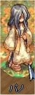

画像にリンクがはってあるものは、クリックすると別窓で大きめサイズが表示されます。
[ネマ神官]
所在地；フレイヤ大神殿（セスルムニル）(ra_temple:116,174) |
   |
[パノ神官]
所在地；フレイヤ大神殿（セスルムニル）内入り口そば |
|  |
[少年]
所在地；ラヘル5時方向(243,37) |
   |
back
(c) Gravity Co., Ltd. & Lee MyoungJin(studio DTDS). All rights reserved.
(c) GungHo Online Entertainment, Inc. All Rights Reserved.
当コンテンツの再利用（再転載・配布など）は、禁止しています。